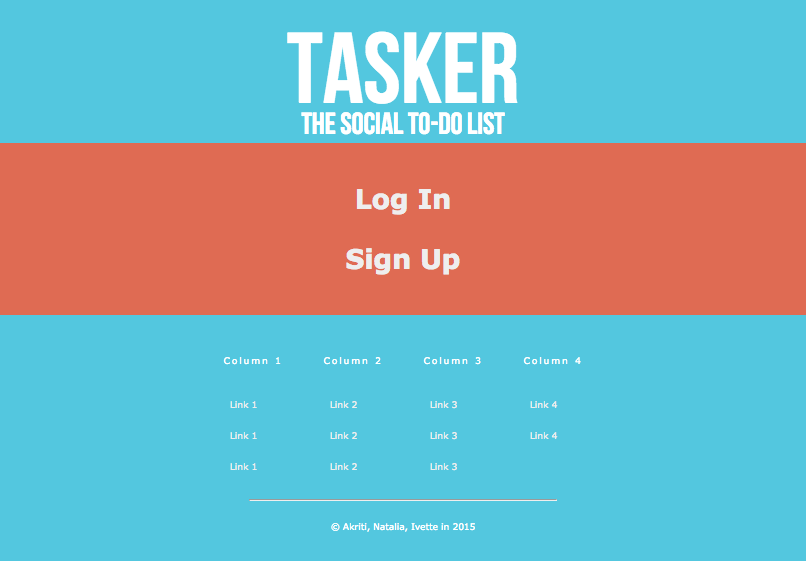
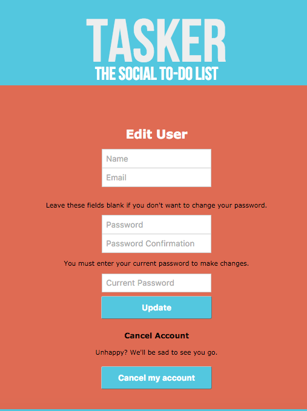
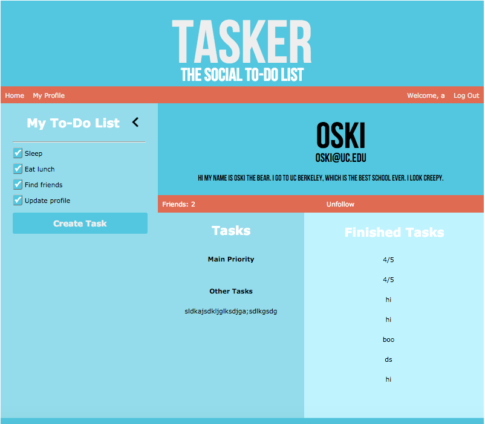

Tasker
Tasker is a social media web application that allows people to connect with friends from school or work and share their to-do lists. It operates under the idea that people are more likely to finish a task if other people know about it and can hold them to it. Users get notified whenever one of their friends begins and finishes a task, and are rewarded with a cute picture every time they finish a task. This app is still under construction, and more features are being added.


